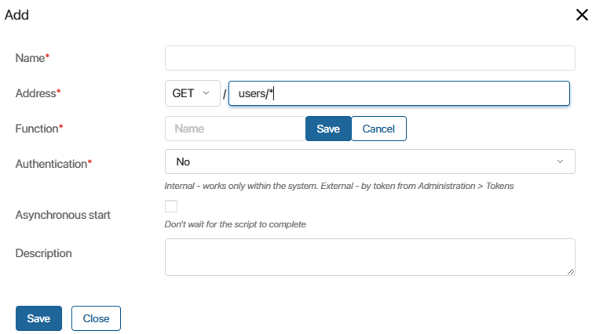

When calling an API method in a module, you can send parameter values to its script and process them. For example, in the method URL, you can specify the identifier of the file to be retrieved or define further actions depending on the sent value.
When calling a method this way, you can customize integration with third-party services that use complex request routing with parameters sent directly to the URL.
To send values when calling an API method:
- Set a special address for it.
- Configure the processing of values in the method script.
Let's see how to do it.
Create a method with a wildcard
Let's assume you create an API method to get the names and emails of employees. When you call it, the ID of the user you want to request information about is sent to it. If no ID is sent, the response includes the data of all users.
To configure such a method:
- In the custom module settings on the API Methods tab, go to editing methods.
- Click + Add.
- In the window that opens, enter a name and select the
GETmethod because the call will retrieve data. - In the Address* field, enter the path to the method and add the character combination
/*at the end.
 - In the Function* field, specify the name of the function containing the method script and click Save.
- Save the API method. Now, the part of the address that will be in the request instead of the
*symbol is not taken into account in routing. You can send parameters in it. - Go to the Scripts tab. Determine what actions will be performed in the method depending on the sent value. To do this, get the value from the
fragmentproperty of theHttpApiRequesttype, which the API method accepts when called:
async function users(req: HttpApiRequest): Promise<HttpResponse | void> {
const resp = new HttpResponse();
// Write the User ID received when calling a method in the `userId`variable
const userId = req.fragment;
// If the ID is not empty, search for a specific user
if (userId) {
const user = await System.users.search().where((f) => f.__id.eq(userId)).first();
// If the user is found, send their data in the response
if (user) {
resp.status(HttpStatusCode.OK);
resp.json({
id: user.data.__id,
name: user.data.__name,
email: user.data.email,
});
// If the user is not found, send an error message in the response
} else {
resp.status(HttpStatusCode.NOT_FOUND);
resp.content(`user with id ${ userId } not found`);
}
return resp;
}
// If the ID is not sent in the request, send data of all users in the response
const users = await System.users.search().all();
resp.status(HttpStatusCode.OK);
resp.json(users.map((user) => ({
id: user.data.__id,
name: user.data.__name,
email: user.data.email,
})));
return resp;
}
Read more about how to write scripts for API methods in the API methods in modules article.
- Save and publish the method.
Now, you can call the configured API method from external systems or in BRIX scripts.
Call a method with a wildcard from an external service
To call API methods from external services, use the fetch() method. Send the full URL of the API method to it. To specify parameter values in the request, add them at the end of the URL using the / symbol.
For example, when calling the users/* method, the user ID is sent to get user data:
let response = await fetch('https://abcd1234.brix.eu/api/extensions/f1e6cf15-7c65-4be5-8443-021a280dcd80/script/users/fb894dcb-9fe0-4783-b7a9-8a76099446b0', {
method: "GET",
});
Call a method with a wildcard in a BRIX script
To call API methods in scripts, use the call() method. To send parameter values, use the withFragment() function.
For example, when calling the users/* method, you can specify the user ID to get their data:
await Namespace.api.users
.withFragment('fb894dcb-9fe0-4783-b7a9-8a76099446b0')
.call({
method: 'GET',
});
If you do not send any parameters, you can call the method without the withFragment() function.
For example, when calling the users/* method in such a way, you get data about all employees:
await Namespace.api.users.call({
method: 'GET',
});
Found a typo? Select it and press Ctrl+Enter to send us feedback